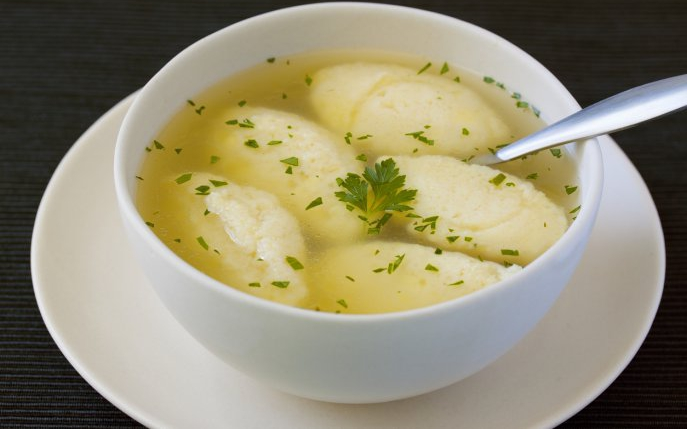

How to make: Galuste

Experience the comfort and warmth of our signature galuste dish, lovingly crafted
with the perfect balance of texture and flavor to delight your senses.
Ingredients:
- One egg
- Semolina
- Salt
Steps:
- Beat the egg in a bowl using a fork, slowly add the semolina (Make sure it's well-incorporated)
- Add salt to taste
- Let rest 10 minutes, the semolina will absorb the liquid and get fluffy
- Shape small dumplings using a spoon, and add them to boiling soup
(Keep in mind that they will double in size)
- Let the galuste boil for 10 minutes, then let them sit in the soup with the stove off and the lid on for 10 more minutes
- Enjoy!